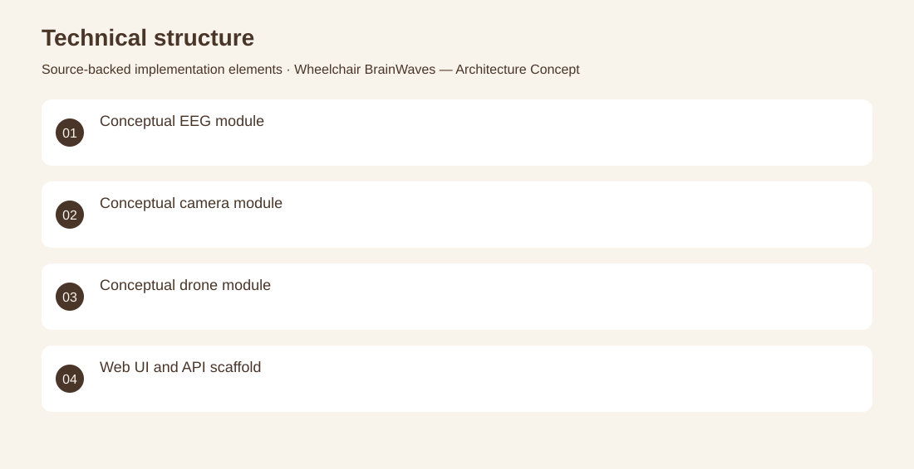

The project
Explore how sensing, control and user interaction could fit together in an assistive-mobility system. Architecture documents and diagrams outline brainwave, camera and drone modules, supported by an initial React/NestJS monorepo and development setup. Produced the modular architecture concept, documented module responsibilities and established the initial application structure. Architecture concept and software scaffold only. Hardware control, EEG interpretation and deployed assistive-device operation are not verified.
The problem
Explore how sensing, control and user interaction could fit together in an assistive-mobility system.
The solution
Architecture documents and diagrams outline brainwave, camera and drone modules, supported by an initial React/NestJS monorepo and development setup.
My contribution
Produced the modular architecture concept, documented module responsibilities and established the initial application structure.
Technical structure

The portfolio cover is an editorial illustration. No live product screenshot is presented for this project.
Showcase assets
{kind=link}
{kind=link}
{kind=link}
New portfolio identity. Newly designed marks are portfolio treatments, not claims of official client branding.